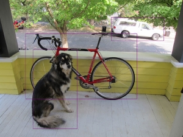

Demo展示
以下所有模型在Tengine model zoo可以找到（密码：hhgc）。
1. 人脸关键点
代码地址：https://github.com/OAID/Tengine/blob/tengine-lite/examples/tm_landmark.cpp
export LD_LIBRARY_PATH=./build/install/lib
./build/install/bin/tm_landmark -m models/landmark.tmfile -i images/mobileface02.jpg -r 1 -t 1
Input Image:
Output Image:
2. ssd目标检测任务
代码地址：https://github.com/OAID/Tengine/blob/tengine-lite/examples/tm_mobilenet_ssd.cpp
export LD_LIBRARY_PATH=./build/install/lib
./build/install/bin/tm_mobilenet_ssd -m models/mobilenet_ssd.tmfile -i images/ssd_dog.jpg -r 1 -t 1
Input Image:
Output Image:

3. retinaface 人脸检测任务
代码地址：https://github.com/OAID/Tengine/blob/tengine-lite/examples/tm_refinaface.cpp
export LD_LIBRARY_PATH=./build/install/lib
./build/install/bin/tm_retinaface -m models/retinaface.tmfile -i images/mtcnn_face4.jpg -r 1 -t 1
Input Image:
Output Image:
4. yolact 实例分割任务
代码地址：https://github.com/OAID/Tengine/blob/tengine-lite/examples/tm_yolact.cpp
export LD_LIBRARY_PATH=./build/install/lib
./build/install/bin/tm_yolact -m models/yolact.tmfile -i images/ssd_car.jpg -r 1 -t 1
Input Image:
Output Image:
5. 人体姿态识别任务
代码地址：https://github.com/OAID/Tengine/blob/tengine-lite/examples/tm_openpose.cpp
export LD_LIBRARY_PATH=./build/install/lib
./build/install/bin/tm_openpose -m models/openpose_coco.tmfile -i image/pose.jpg -r 1 -t 1
Input Image:
Output Image1:
Output Image2: